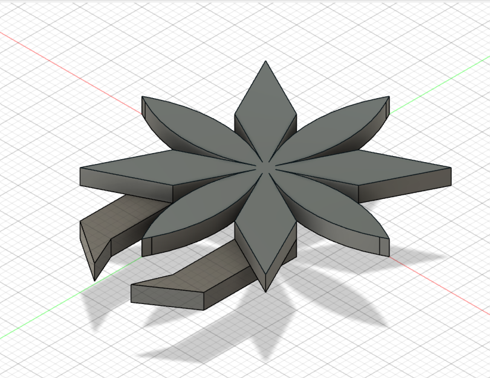
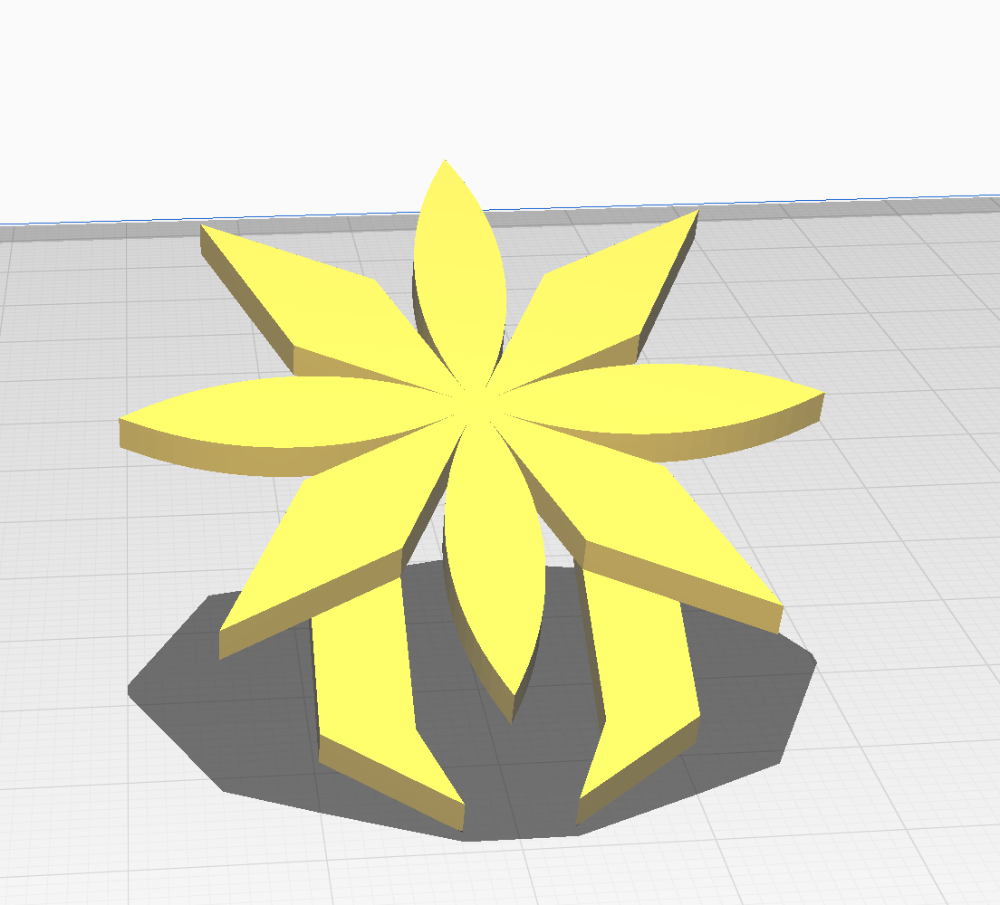

第１回
1.作品のタイトル
★~ピンセット型ブローチ~★
2.構想段階の手書きスケッチ


ストーリーボード薄くてごめんなさい。ストーリーボードには一番初めに思いついた髪を括るピンセットについて書いたもので実際に作ったtake5のものではありません。
ちなみに、二枚目がその髪を括るピンセットのスケッチでtake1になります。
take2~4は空想上で考え実際にスケッチしたわけではないので載せれません。
3.実際に作った作品の画像
これは納得のいったtake5の作品です。take1~4は誠に勝手ながら省かせてもらいます!!
現実的に、このようにジャケットに付けていても個人的には不自然には見えないと思います💦💦
これに色が付いたらもっと見栄えが良くなるのですが...
.png)
4.設計ファイル
Fusion360の設計ファイル Cura設計ファイル Curaのデザイン図面


.png)
5.作品の説明
これはピンセット自体の要素はあまり無くどちらかというとピンセット自体の形の要素をメインにして作りました。
始めは飲食店にあったらいいなと思う髪ゴムの役割を担う髪留めverのピンセットをイメージして作りましたが納得がいかず
take5でようやく納得のいったピンセットを進化させたブローチにたどり着きました。
6.なぜこの作品を作ろうという想いに至ったのか
授業でピンセットを考えている時に少ししかアイディアが浮かばず焦っていました。そんな時にふと思いついたのが髪ゴムの役割を担うピンセットです。
しかし、特に形の変化が無かったため似ている髪飾りにしようと思いました。しかしながら、髪飾りに見せる為の技術やセンスが無かったため、諦めました。
最終的に、アクセサリーの中でもブローチ（バッチ）が一番出来が良かったのでこれにしました。私は、普段からアクセサリー類を身に付ける方ではないため
この機会に何かしら購入して身に着けたいと思います。
7.制作プロセスの中で調べたこと
Fusion360の使い方やCuraの使い方、HTMLで工夫するには...等々です。あまり工夫できていませんが💦
8.感想
今回初めて3Dプリンターを使って360度から自由自在に形を設計して作品を作ることができてとても良い機会でした。
もっとFusion360の使い方を調べて巧みな作品を作っていきたいと思います。
デザイン演習Ⅰ・Ⅱトップページ
XBPトップページ